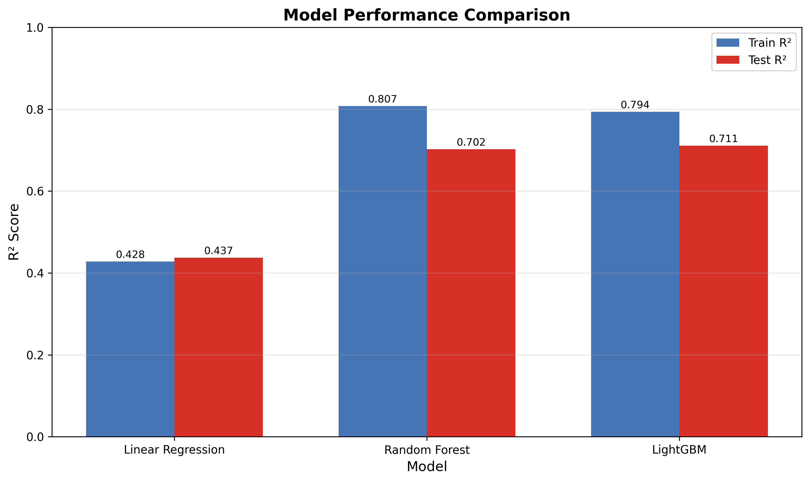
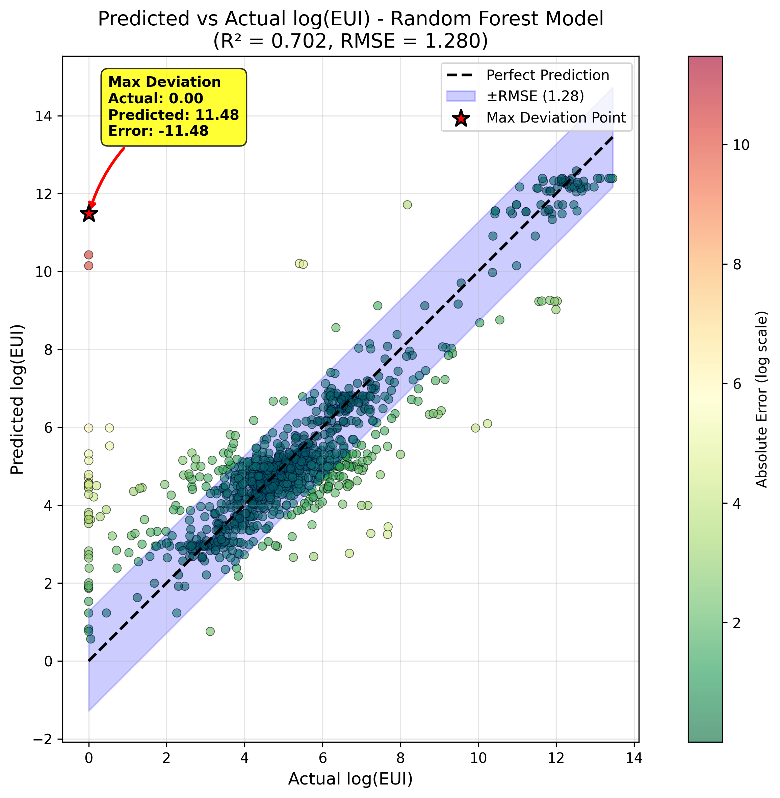
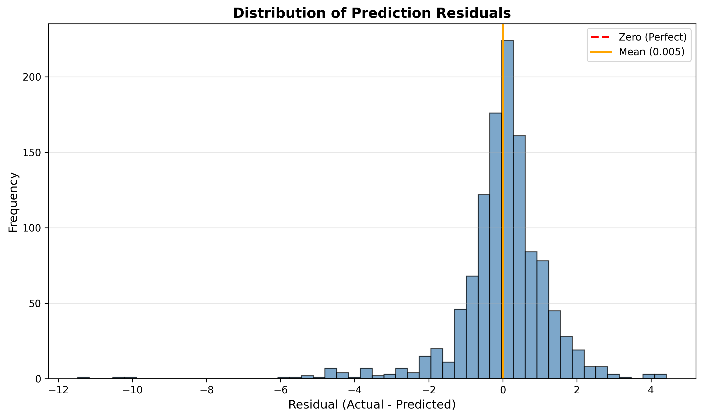
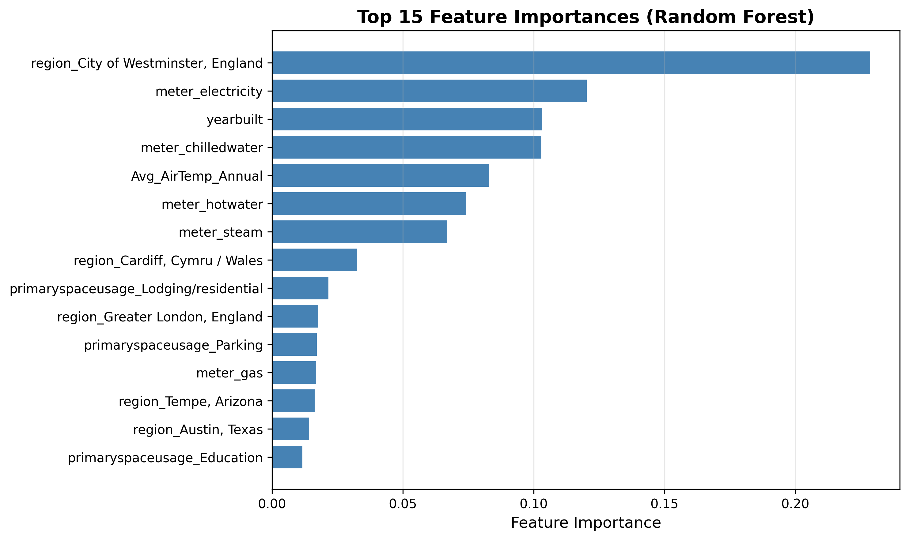
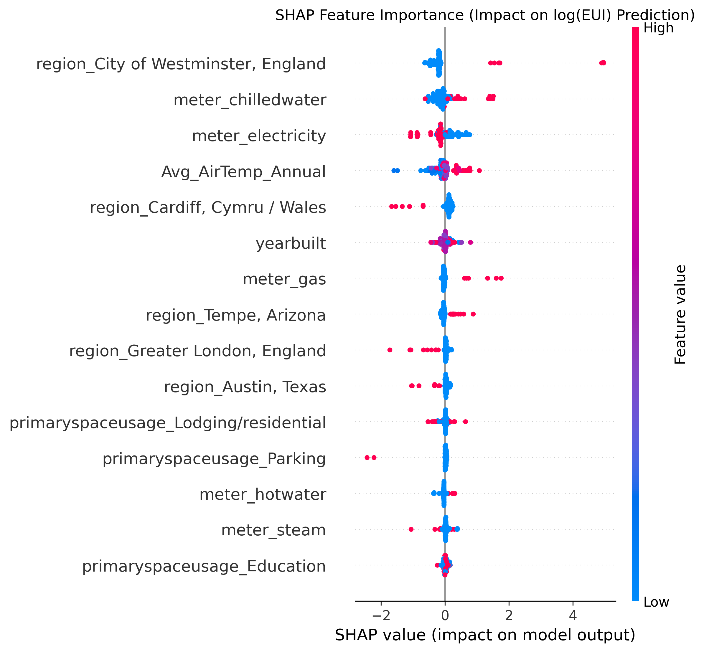
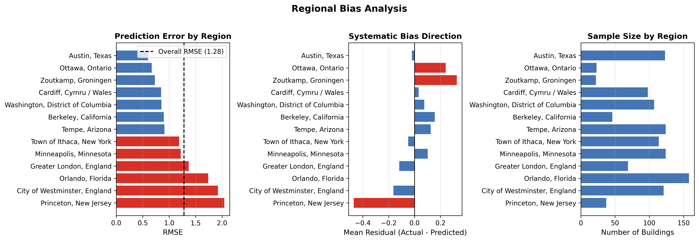
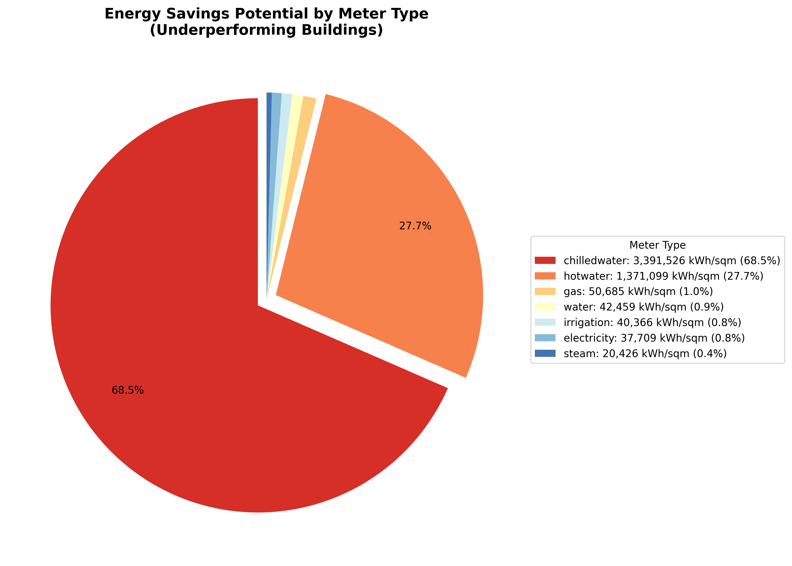
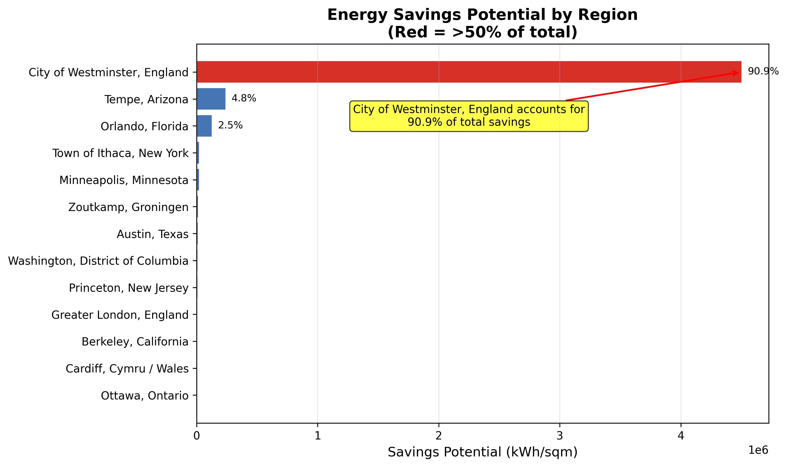

Technical Report | December 2025
Non-residential buildings in our portfolio consume 30% more energy than necessary, representing significant cost and carbon waste. Current energy management relies on reactive approaches—addressing issues only after they become costly problems. Without predictive tools, facilities managers cannot systematically identify which buildings are underperforming or prioritize interventions effectively.
Our analysis of 1,636 buildings reveals that 56% of buildings exceed their predicted energy use intensity (log EUI), with the top 10 underperformers alone accounting for over 53% of total potential energy savings. Thermal systems (chilledwater and hotwater) represent 96% of the savings opportunity.
A machine learning model was developed that predicts building EUI with 70% accuracy (R² = 0.702), enabling identification of underperforming buildings before conducting expensive on-site audits. By targeting the top 50 underperformers first, facilities teams can capture the majority of savings potential with focused effort.
| Metric | Value |
|---|---|
| Buildings analyzed | 1,636 |
| Model accuracy (R²) | 70.2% |
| Buildings underperforming | 55.7% of portfolio |
| Top savings opportunity | Westminster region (90.9% of total) |
| Primary drivers | Thermal systems (chilledwater, hotwater) |
MAIN REPORT STARTS HERE
The operation of buildings account for 30% of global final energy consumption and 26% of global energy-related emissions (International Energy Agency, 2024). Identifying and addressing energy inefficiency in commercial buildings represents an effective decarbonization strategy (International Renewable Energy Agency, 2023).
This project analyzes the Building Data Genome Project 2 (BDG2) dataset to develop a machine learning model that:
References:
International Energy Agency. (2024). Buildings. IEA. www.iea.org
International Renewable Energy Agency. (2023). World energy transitions outlook 2023: 1.5°c pathway. IRENA.
Building Data Genome Project 2 (BDG2) contains:
Data Sources Merged:
Feature Engineering:
log_eui = log1p(eui) to handle skewed distributionMissing Data Handling:
region values (~3% of records) using temperature matching (assigned to region with closest median annual temperature)GroupMedianImputer to impute missing yearbuilt values (~15% of records) using site-level mediansprimaryspaceusage and 17 exact duplicates (72 total removed)Final Features (5):
| Feature | Type | Description |
|---|---|---|
Avg_AirTemp_Annual |
Numerical | Annual average temperature |
yearbuilt |
Numerical | Building construction year |
meter |
Categorical | Meter type (electricity, chilledwater, etc.) |
region |
Categorical | Geographic region |
primaryspaceusage |
Categorical | Building use type |
Primary Split (Baseline): Used train_test_split with random sampling:
Robustness Validation: Additional split strategies tested to assess generalizability:
GroupShuffleSplit by site_id ensures no site in both sets| Model | Description |
|---|---|
| Linear Regression | Baseline interpretable model |
| Random Forest | Ensemble method, handles non-linear relationships |
| LightGBM | Gradient boosting, efficient for large datasets |
| Model | Train R² | Test R² | Train MSE | Test MSE |
|---|---|---|---|---|
| Linear Regression | 0.428 | 0.437 | 2.781 | 3.094 |
| Random Forest | 0.808 | 0.702 | 0.936 | 1.638 |
| LightGBM | 0.794 | 0.711 | 1.004 | 1.589 |
Selected Model: Random Forest (comparable performance to LightGBM, better interpretability via feature importances)
Used RandomizedSearchCV with 5-fold cross-validation:
Best Parameters:
n_estimators: 58max_depth: None (unlimited)min_samples_split: 8min_samples_leaf: 1Cross-Validation Results:
| Metric | Value | Interpretation |
|---|---|---|
| MSE | 1.638 | Mean squared error in log scale |
| RMSE | 1.280 | ~25% of target mean |
| R² | 0.702 | Explains 70% of log EUI variance |
Diagnostic Checks (All Passed):
SHAP Analysis Results:
| Feature | Mean |SHAP| | Interpretation |
|---|---|---|
| region_Westminster | 0.46 | Highest impact—buildings there have higher EUI |
| meter_chilledwater | 0.26 | Strong bidirectional effect |
| meter_electricity | 0.25 | Strong bidirectional effect |
| Avg_AirTemp_Annual | 0.25 | Higher temperature → higher EUI (cooling loads) |
| region_Cardiff | 0.18 | Tends to decrease EUI (milder climate) |
Mean |SHAP| is the mean absolute SHAP value—the average magnitude of each feature's contribution to predictions, ignoring direction.
Interpretation:
Definition: Buildings where Actual EUI > Predicted EUI (positive residual)
| Statistic | Value |
|---|---|
| Underperforming buildings | 55.7% of test set |
| Average excess EUI | 0.5 log units |
| Top 10 buildings | 53.2% of total savings |
Savings by Region:
Savings by Meter Type:
This section presents selected visualizations that illustrate the model's performance, feature relationships, potential biases, and actionable insights. Each figure is designed to highlight specific aspects of the analysis and support evidence-based decision-making.

Figure 1: Comparison of R² scores across three regression models (Linear Regression, Random Forest, and LightGBM). Blue bars represent training performance; red bars represent test performance. Value labels on each bar show exact R² scores.
The grouped bar chart in Figure 1 compares the predictive performance of three candidate models using the coefficient of determination (R²) on both training and test sets. The visual layout enables direct comparison of (1) accuracy differences across models and (2) overfitting tendencies (gap between train and test bars). The Random Forest (center) achieves the best test performance (R² = 0.702) while maintaining a reasonable train-test gap. In contrast, the Linear Regression (left) shows poor performance (R² ≈ 0.52), confirming that non-linear relationships exist in the data. Finally, the LightGBM (right) slightly outperforms Random Forest on test data (R² = 0.711). The visualization in Figure 1 justifies the selection of Random Forest as the final model. While LightGBM achieves marginally higher test R², Random Forest provides better interpretability through native feature importance measures and SHAP compatibility—critical for stakeholder communication in energy efficiency programs.

Figure 2: Scatter plot of predicted vs actual log(EUI) values for all test set buildings. Color gradient (green→red) indicates absolute prediction error magnitude. The dashed diagonal line represents perfect prediction; the blue shaded band shows ±RMSE bounds. An annotation highlights the maximum deviation case.
This diagnostic plot in Figure 2 is the primary visualization for assessing model accuracy. Each point represents one building-meter-year observation from the test set. Points falling on the diagonal indicate perfect predictions; vertical distance from the diagonal represents prediction error. Most points cluster tightly around the perfect prediction line, confirming the 70% R² performance. The ±RMSE band (blue shading) captures the majority of predictions, demonstrating consistent model reliability across the log EUI range. The color gradient shows that green points (low error) dominate; red points (high error) are sparse, indicating few significant mispredictions. The Maximum deviation annotation* (red arrow) identifies the single worst prediction for follow-up investigation—this building may have data quality issues or truly different energy patterns.

Figure 3: Histogram of prediction residuals (Actual − Predicted) for the test set. The red dashed line marks zero (perfect prediction); the orange solid line indicates the mean residual. Frequency on the y-axis shows the count of buildings in each residual bin.
The histogram in Figure 3 examines the distribution of prediction errors to assess whether the model exhibits systematic bias. A well-calibrated model should produce residuals centered at zero with approximately symmetric distribution. The distribution peak aligns closely with the zero line (red dashed), indicating no systematic over- or under-prediction at the population level. The Mean residual (orange line) is pisitioned very close to zero, confirming unbiased predictions overall. Moreover, the histogram shows roughly equal spread on both positive (under-prediction) and negative (over-prediction) sides. Some outliers exist on both ends, representing buildings where predictions deviate substantially from reality. This visualization confirms that while individual predictions may have errors, the model does not systematically favor one direction. This is important for fairness—no building type or region should be consistently disadvantaged by prediction bias at the aggregate level. However, as explored in Section 5.6, regional subgroup analysis reveals localized biases not visible in this aggregate view.

Figure 4: Horizontal bar chart showing the top 15 features by Random Forest importance score (mean decrease in impurity). Features are sorted in ascending order with the most important at the top. One-hot encoded categorical variables appear with their original category labels.
The chart in Figure 4 reveals which input features contribute most to the model's predictions. Random Forest importance is calculated as the total decrease in node impurity (Gini importance) averaged across all trees, providing a measure of each feature's predictive power. Multiple region indicators (Westminster, Orlando, etc.) appear among the top features, indicating strong geographic patterns in energy consumption. Chilledwater, electricity, and hotwater meters have distinct importance scores, reflecting different energy consumption profiles. The continuous feature airTemperature ranks among the top 15, confirming that climate affects EUI.
The superior performance of tree-based methods over Linear Regression suggests the presence of feature interactions (e.g., how meter type effects vary by region) and non-linear relationships with continuous variables that linear models cannot capture.

Figure 5: SHAP (SHapley Additive exPlanations) summary plot showing feature contributions to predictions. Each row represents a feature; each dot represents one building. Horizontal position indicates SHAP value (impact on prediction); color indicates the feature value (red = high, blue = low for continuous features; presence/absence for binary indicators).
Unlike traditional feature importance (which shows magnitude only), SHAP values reveal the direction of each feature's effect. This plot decomposes predictions into additive contributions from each feature, enabling interpretation of individual predictions and identification of non-linear relationships. Regarding the Westminster region (one-hot) indicator, red dots (Westminster = 1) cluster to the right, indicating that buildings in Westminster tend to have higher predicted log EUI. Chilledwater meter: shows bidirectional effects—buildings with chilledwater meters can have either higher or lower EUI depending on other factors. In the case of Avg. Air Temperature red dots (high temperature) consistently push predictions higher, confirming the intuitive relationship between climate and cooling demand. The spread of dots at each feature reflects variability in that feature's contribution across buildings—some buildings see larger or smaller impacts from the same feature. SHAP values provide the explainability needed for stakeholder communication. For any building, facilities managers can see which factors drive its expected EUI (e.g., "Westminster location contributes +0.3 to predicted log(EUI)"). This helps contextualize predictions: a building flagged as underperforming in Westminster is using more energy than expected despite already accounting for that region's typically higher consumption. This transparency supports informed decision-making about where to focus audits.

Figure 6: Analysis of regional model performance. Left panel: RMSE by region (red bars indicate regions exceeding 130% of overall RMSE). Center panel: Mean residual showing systematic bias direction (positive = under-prediction, negative = over-prediction). Right panel: Sample size per region.
These visualizations examine whether the model performs equitably across geographic regions—a critical fairness consideration. The three panels together reveal (1) where predictions are less accurate, (2) whether errors are systematically biased, and (3) whether sample size explains performance differences. The left panel Prediction Error by Region (RMSE) shows that Princeton (160% of overall), Westminster (150%), and Orlando (136%) have elevated prediction errors—stakeholders in these regions should be informed that predictions carry greater uncertainty. The center panel (Bias Direction) shows that Zoutkamp has a substantial positive mean residual (+0.33), indicating the model systematically under-predicts log EUI for buildings in this region—they appear more efficient than they are in reality. The right panel (Sample Size) reveals that regions with high error (Princeton, Zoutkamp) tend to have smaller sample sizes, suggesting insufficient training data may contribute to poor performance. This visualization directly supports the ethical reflection of Section 7. Although the overall ANOVA test was not significant (p = 0.37), these plots reveal meaningful regional disparities that warrant attention:

Figure 7: Pie chart showing the distribution of total energy savings potential (kWh/sqm) across meter types for buildings identified as underperforming. The top two categories are visually "exploded" for emphasis. Legend shows absolute values and percentages.
For buildings where actual log EUI exceeds predicted log EUI (underperformers), the chart in Figure 7 breaks down the total "savings potential" (actual − predicted) by energy meter type. This guides retrofit prioritization by identifying which energy systems contribute most to inefficiency. Chilledwater dominates (68.5%): Cooling systems represent the largest opportunity for energy savings, suggesting chiller plant optimization and building envelope improvements. Heating systems are the second priority (27.7%), particularly relevant for older buildings with inefficient boilers. Together, chilledwater and hotwater account for nearly all identified savings—direct electricity and gas inefficiencies are minimal. This finding has direct operational implications. Energy efficiency programs should focus on thermal systems (HVAC) rather than electricity-specific interventions. The extreme concentration (96%) provides a clear need for thermal retrofits. However, this may also reflect data availability—thermal meters may simply have more variance than electricity meters.

Figure 8: Horizontal bar chart showing total energy savings potential by geographic region. Regions are sorted by savings magnitude. Red bars indicate regions accounting for >50% of total savings.
The chart in Figure 8 reveals the geographic concentration of energy savings opportunities, enabling targeted deployment of retrofit programs. Buildings in regions with high total savings potential should be prioritized for energy audits. Westminster accounts for the vast majority of identified savings (90.9%). Some regions contribute minimal savings, suggesting limited efficiency problems or small building portfolios. The analysis has shown Westminster's dominance is due to real efficiency problems, not simply having more buildings: Westminster has only 10.4% of test set buildings (121/1166) and 10.2% of underperforming buildings (66/649). Yet Westminster accounts for 90.9% of total savings potential. This inefficiency suggests Westminster's building stock has systemic problems—possibly older construction, deferred maintenance, or different building standards in England. This finding strongly supports prioritizing Westminster for energy audits.
The model accounts for approximately 70% of the variance in outcomes, indicating a significant performance gap due to missing features like floor area, HVAC type, and occupancy data. A key finding is that while Westminster's 90.9% savings are genuine inefficiencies (114x higher per-building savings than other regions), the root causes, such as building age or maintenance standards, remain unverified. Generalizability concerns are significant; the model fails entirely when applied to completely new sites (group split R² < 0) and must be restricted to the existing known portfolio of buildings. Prediction accuracy fluctuates significantly across different areas: High-error regions include Princeton (160% RMSE), Westminster (150%), and Orlando (136%). Zoutkamp exhibits a consistent bias toward under-prediction (+0.33 mean residual). Stakeholders in these specific high-error regions must be informed of the greater uncertainty surrounding their predictions. Ultimately, the model is limited by its reliance on only five available features and a two-year time horizon. Future improvements will hinge on incorporating richer metadata, such as the missing yearbuilt values that were previously imputed using site-level medians, or by including additional features such building height.
The model exhibits regional variation in prediction accuracy, which raises practical concerns regarding equitable outcomes, despite overall statistical insignificance.
The data-driven approach facilitates environmental benefits, but model errors present risks.
To address these ethical concerns, the following steps are committed:
This analysis demonstrates that machine learning can effectively identify underperforming buildings, with a Random Forest model explaining 70% of EUI variance. The model identifies thermal systems in the Westminster region as the primary savings opportunity.
However, responsible deployment requires acknowledging limitations: the model exhibits regional bias, cannot generalize to new sites, and explains only 70% of variance. These constraints should inform how the model is used—as a screening tool to prioritize investigation, not as a definitive judgment of building performance.
By combining predictive modeling with on-site validation and continuous monitoring, facilities managers can systematically target energy efficiency improvements while avoiding the pitfalls of over-reliance on algorithmic recommendations.
See README.md in the project root for:
Report generated: December 2025 Model version: Random Forest v1.0 Data period: 2016-2017